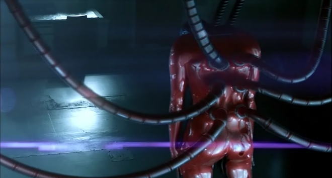
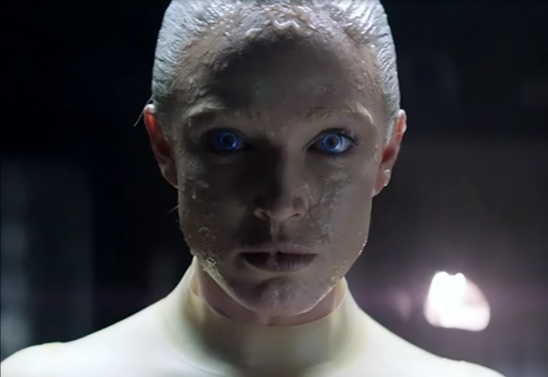
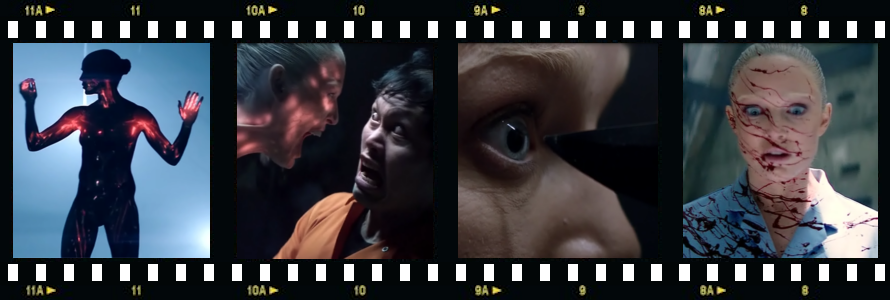

In not-so-distant future, a cold war with China has forced the West into the deepest recession in recorded history. The new arms race is focused on ever more powerful, intelligent machines. These synthetic organisms are designed to look and act like a human, although their physical abilities greatly surpass those of human beings…
Calling a film a “cult classic” before it was actually released, is usually a rather bad idea
Vincent McCarthy (Toby Stephens) is a prodigious neuroscientist employed by the Ministry of Defence to utilise cybernetic prosthetics in order to recondition mutilated soldiers returning from the battlefields. At the same time, Vincent struggles to develop a true self-aware artificial intelligence, that could be used to repair brains of injured soldiers. Alas, even his best creations, when put under scrutiny, fail on a simple Sally–Anne test, meaning they do not possess the theory of mind concept, therefore cannot be really considered to be truly self-aware.
Then Vincent happens upon a talented programmer Ava (Caity Lotz) who developed a Turing Test-beating AI program able to learn from his past experiences. Vincent quickly sees the potential of using Ava’s software in restoring cognitive functions of the brain-damaged soldiers. But he has also another, hidden motive - he hopes that his work on the project will, as a side-effect, yield a glimmer of hope for his terminally ill daughter who has Rett Syndrome. While Vincent and Ava perfect the new artificial brain created with the help of Ava’s AI software, they gradually grow fond of each other. But Vincent is not the only one with an ulterior motive. His superior Thomson (Denis Lawson) sees their artificial brain as a final piece of a puzzle to build an android super soldier. When Ava discovers his plan, Thomson has her murdered (but not before Vincent takes her brain scan) and informs Vincent that she has been assassinated by a Chinese agent. Heartbroken Vincent uses the artificial brain, uploaded with Ava’s brain scan, to create a perfect android based on Ava’s likeness. He calls it simply The Machine.
The rest of the story is rather predictable. Without revealing too much, Thomson’s evil schemes won’t go exactly to plan, and Ava, resurrected as The Machine, will help Vincent save his daughter (sort off).
Visual effects are simply flawless, but it is the storyline that is the film’s Achilles heel
As far as acting is concerned, Toby Stephens gives a sound performance as the heartbroken, morally conflicted scientist, but Denis Lawson's hard-nosed corporate villain Thomson is too one-dimensional, which is to say, isn’t his fault - he portrays ruthless and scheming Thomson convincingly and to his best abilities, limited by the way the character was scripted
This is however partly redeemed by an excellent performance given by Caity Lotz in roles of both Ava and The Machine. But it is mainly the latter role where she really excels. Lotz is an experienced martial artist proficient in Taekwondo, Wushu and Muay Thai as well as an eager practitioner of other related disciplines such as Parkour and Tricking, which really shows in the action scenes of the film, where she performed all the stunts and fight scenes’ choreography herself.
The film’s special visual effects are also impressive for a film with a budget under £1 million, and the CGI, mainly that concerning The Machine, is flawless, but it is the storyline that is the film’s Achilles heel. Shallow and formulaic, predictable and derivative, the film would certainly benefit from a more developed storyline and an additional 30 minutes of running time.
The Machine is a solid science fiction film, but Blade Runner it certainly ain't.
And that brings me to the last subject: Calling a film a “cult classic” before it was actually released, is a bad, bad idea. Unfortunately, that is exactly what happened prior release of The Machine. But it didn't stop there, oh no. The film got compared to a real cult classic, Blade Runner. Some deluded critic even went so far as to comparing the existent Turing Test performed in the film with the fictional Voight-Kampff Test in Blade Runner, failing to understand the fundamental difference between the two (the former is a test of a machine's ability to exhibit intelligent behaviour indistinguishable from that of a human, while the latter is designed to distinguish machines, or replicants, how they are called in Blade Runner, from humans based on their emotional response - meaning they already do exhibit intelligent behaviour indistinguishable from that of a human and must have passed the Turing Test with flying colours).
I am not sure if this ‘cult classic’ and ‘the new Blade Runner’ promo plastered all over the Internet a few weeks before the film’s

premiere, was some ‘clever’ PR plot of Red & Black Films, the film’s production company, or just a spontaneous initiative of some misguided film critics, but what I am sure about is, that it has done to this, what is essentially a very good sci-fi film, a big disservice. If I did not come to see the film with any preconceptions, I would certainly give it a 8/10 score. But sitting down in front of the box expecting to see a ‘Blade Runner for a new generation’ could have led only to one result - disappointment. This is why I am giving it 7/10. That being said, The Machine is a solid science fiction film which is definitely well worth a look.